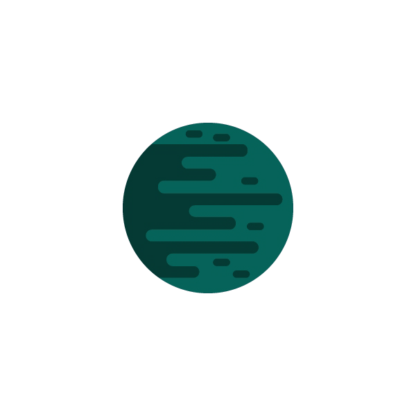

Depuis plus de deux siècles, la Terre est un désert inhospitalier et
stérile. Les villes autrefois florissantes, les jungles luxuriantes et
les vastes océans qui peuplaient la planète ont été remplacés par des
déserts austères et sablonneux et des rochers froids et sans vie. La
vie humaine s'est étiolée et ce qui reste est un rappel silencieux de
nos erreurs passées.
L'atmosphère de la Terre n'est plus qu'une fine brume toxique,
dépourvue d'oxygène et remplie de polluants mortels. Les rayons du
soleil ne sont plus visibles, bloqués par l'épais brouillard, et la
terre est stérile, avec peu de végétation. L'océan, autrefois source
de vie et de subsistance, n'est plus qu'un cimetière de navires brisés
et de villes englouties, dont les vestiges sont constamment battus par
les vagues féroces d'une mer sauvage et indomptée.
L'air est rempli des cris des oiseaux et des animaux qui restent, les
quelques créatures qui ont réussi à survivre aux dangers
environnementaux. Le terrain est extrêmement dur et traître, avec des
affleurements rocheux, des canyons profonds et des falaises
dangereuses qui empêchent tous les explorateurs, même les plus
robustes, de se frayer un chemin à travers le paysage.
La Terre n'est plus un lieu de vie, mais un monument à nos erreurs. La
race humaine a été forcée d'aller de l'avant, de trouver un nouveau
foyer parmi les étoiles, mais la Terre est toujours debout, un sombre
rappel de ce que nous avions autrefois, et de ce que nous avons perdu.


